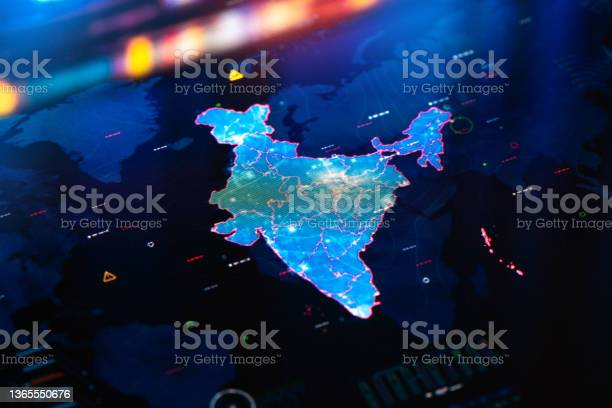

Features of India

Physical features of India:
Physical Features are the natural features on the Earth's surface. They also have another name known as “Landforms”.
Some of the essential physical features of India are:
i) The Himalayas:
They are a chain of very high mountain ranges, which run from the northern, north-eastern, and western parts of India.
They are further differentiated into three smaller regions, that is, the Shivaliks, the Himachal range, and the Himadri range.
ii) The Northern Indian Plains:
They are formed of an extremely vast stretch of plains, that is, alluvial terrain.
The Northern plains are further differentiated into three parts, that is, the Ganga plains, the Punjab plains, and the Brahmaputra plains.
The soil in these terrains is very fertile.
iii) The Great Indian Desert:
It covers the states of Rajasthan and Gujarat.
The Thar Desert is the biggest, featuring sandy terrain and a dry climate.
The annual rainfall that takes place in these regions is less than 150 mm in a year.
iv) The Peninsular Plateau:
It comprises the Central Highlands and the Deccan Plateau.
These regions are one of the oldest landmasses in the country.
The hilly region of the Western Ghats comes under the Deccan plateau, and the central highlands host the hilly regions of the Eastern Ghats.
v) The Coastal plains or the Coastal regions:
The eastern coastal plains come in between the Eastern Ghats and the Bay of Bengal, while the western coastal plains lie in between the Western Ghats and the Arabian Sea.
vi) Islands:
The two main Islands, which come under the Indian Territory are the Lakshadweep Islands and the Andaman and Nicobar Islands.